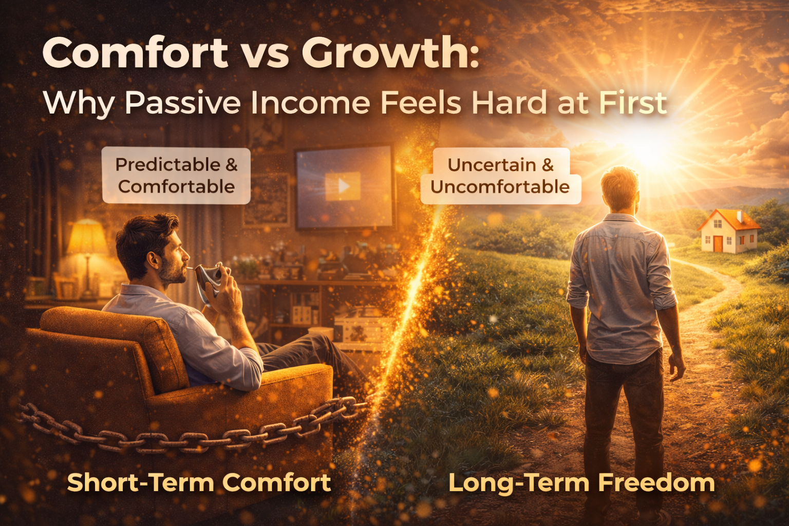

Comfort vs Growth: Why Passive Income Feels Hard at First

Introduction
Most people don’t fail at building passive income because they lack ability.
They fail because they underestimate how uncomfortable the process feels in the beginning.
At first, passive income feels slow, uncertain, and unrewarding. It does not give immediate results. It does not provide instant validation. It does not feel secure.
So people quit.
Not because it doesn’t work—but because it doesn’t feel right.
This is the real conflict:
Comfort feels right. Growth feels wrong.
Understanding this difference is critical, because if you misinterpret discomfort as failure, you will stop before anything starts working.
The System You Are Conditioned Into
From an early stage, most people are trained into a specific pattern:
Do the task
Get rewarded immediately
This happens in school, jobs, and most structured environments.
You study → You get marks
You work → You get paid
This creates a strong mental model:
Effort should produce immediate results.
Active income fits perfectly into this model.
You work today
You get paid at the end of the day, week, or month
The feedback loop is short and predictable.
Because of this, your brain begins to associate certainty and speed with correctness.
Anything that does not follow this pattern feels inefficient or risky.
Why Passive Income Breaks This Pattern
Passive income does not follow the same structure.
The sequence changes:
You build
You wait
You improve
Then you earn repeatedly
The effort is upfront. The reward is delayed.
This creates a gap between action and result.
And that gap is where discomfort begins.
During this phase:
- You are working without proof
- You are investing time without guaranteed return
- You are operating without immediate feedback
This feels unnatural because it contradicts everything you are used to.
The Psychological Conflict: Comfort vs Growth
To understand why this feels difficult, you need to understand how the mind operates.
Comfort Zone
The comfort zone is built on:
- Familiar actions
- Predictable outcomes
- Low uncertainty
It minimizes risk and mental strain.
Active income sits inside this zone.
Even if the income is limited, it feels stable because the process is known.
Growth Zone
The growth zone is different.
It involves:
- New actions
- Uncertain outcomes
- Delayed rewards
Passive income sits here.
When you enter this zone, your brain reacts with resistance.
Not because the path is wrong—but because it is unfamiliar.
Why Passive Income Feels Difficult at the Beginning
There are specific reasons why this process feels harder than it actually is.
1. Delayed Gratification
Humans are naturally wired to prefer immediate rewards.
Passive income requires the opposite.
You may:
Spend days creating a product
Spend weeks building an audience
Spend months refining a system
Before seeing meaningful results.
This delay creates doubt.
You start questioning whether your effort is useful.
2. Lack of Visible Progress
In active income, progress is visible:
Hours worked
Tasks completed
Payments received
In passive income, progress is less obvious.
You are:
Learning
Testing
Improving
But results are not immediately measurable.
This makes it feel like nothing is happening, even when progress is being made.
3. Uncertainty and Risk Perception
Passive income involves variables you cannot fully control:
- Market response
- Audience growth
- Product demand
This uncertainty creates perceived risk.
Even if the actual financial risk is low, the psychological discomfort is high.
4. Identity Shift
Building passive income requires a change in identity.
You are no longer just:
A worker
A service provider
You are becoming:
A creator
A system builder
This shift is not easy.
It requires new ways of thinking, planning, and acting.
Until this identity stabilizes, everything feels inconsistent.
5. Absence of External Validation
Active income provides regular validation:
Salary
Feedback
Recognition
Passive income does not provide this immediately.
You may work in isolation without confirmation that you are on the right path.
This can reduce confidence if you depend on external validation.
Why Most People Go Back to Comfort
At this point, many people return to active income focus.
Not because passive income is ineffective, but because:
Comfort gives immediate certainty
Growth requires patience
The mind chooses relief over long-term gain.
This is why most people remain in the same financial position for years.
They prioritize short-term comfort over long-term leverage.
The Hidden Cost of Comfort
Comfort feels safe, but it comes with long-term consequences.
When you stay in comfort:
- Your income remains tied to time
- Your growth remains limited
- Your risk remains concentrated
You may feel stable in the present, but your future remains uncertain.
This is the trade-off:
Short-term comfort in exchange for long-term limitation.
Why Growth Feels Unstable but Creates Stability
Growth feels unstable because it involves:
Learning
Experimentation
Delayed outcomes
However, it builds something stronger.
When you create passive income systems:
- You reduce dependency on one income source
- You create multiple streams
- You build assets that generate repeated returns
Over time, this leads to:
Greater control
Lower financial stress
Higher flexibility
What initially feels unstable becomes more stable than active income.
The Critical Phase: The Gap Period
There is a phase where:
Your passive income is not yet producing results
Your active income is still your main support
This is the most difficult stage.
You are:
Investing effort without immediate return
Managing current responsibilities
Building for the future simultaneously
This phase tests consistency.
Most people quit here because results are not visible yet.
But this phase is temporary.
Once your system starts working, the effort-to-income ratio changes significantly.
Reframing the Difficulty
The mistake most people make is misinterpreting difficulty.
They think:
“If it feels hard, it means it’s not working.”
In reality:
If it feels hard, it often means you are building something new.
Difficulty in passive income is not a warning sign.
It is part of the process of creating leverage.
What Happens After the Initial Phase
Once your system starts generating income:
Results become visible
Confidence increases
Effort becomes more efficient
You are no longer working only for immediate income.
You are working to expand systems that already produce income.
This is where the shift happens.
Conclusion
Passive income feels hard at first because it requires moving from comfort to growth.
Comfort is predictable, immediate, and familiar.
Growth is uncertain, delayed, and unfamiliar.
This creates resistance.
But this resistance is temporary.
The discomfort exists only in the early stage.
Those who push through it build systems that:
- Reduce dependency on time
- Create scalable income
- Provide long-term financial stability
Those who avoid it remain dependent on continuous effort.

If you want a clear, step-by-step system to turn your skills into a passive income stream, you need the right framework.
The book Passive Income Secret shows you exactly how to:
- Identify profitable skills
- Create digital products that sell
- Build systems that generate consistent income
If you are serious about starting, don’t wait for the perfect moment.
Get your copy of Passive Income Secret and start turning your skills into income today.
← Why People Stay Stuck Without Passive Income